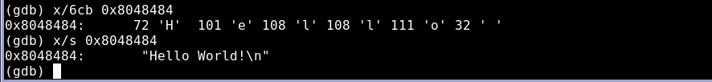

练习 firstprog.c
1. 下面开始练习,firstprog.c 是一段简单的C代码,将 "Hello,World!" 这句话打印10次.
2. 先看一下main()函数被转换后的机器码,使用Intel语法,使用-M intel选项.
3. 查看GDB显示程序启动前处理器寄存器的状态
4. 设置GDB默认语法为Intel
5. Intel语法遵循如下风格.
operation <destination>, <source>
5.1 下列指令将值从ESP移到EBP中,然后从ESP减去8并将结果存储到ESP中8048375: 89 e5 mov ebp,esp
8048377: 8e ec 08 sub esp,0x85.2 第一行EBP减去4和9进行比较,第二行将参考前一个结果，如果那个值小于或等于9就会跳转到0x8048393处，第三行，如果前面条件都不符合的情况下进行跳转 0x80483a6
804838b: 83 7d fc 09 cmp DWORD PTR [ebp-4], 0x9
804838f: 7e 02 jle 8048393
8048391: eb 13 jmp 80483a6
6. GDB使用-g标志来包含额外的调试信息,这些调试信息将使GDB能够访问源代码.
7. o 以八进制显示,x 以十六进制显示,u 以标准的十进制无符号数字显示,t 以二进制显示,容许将info register eip简写为i r eip
8. 可以在检查命令的格式之前添加一个数字，以检查目标地址的多个单元.
9. b 单个字节,h 半字,大小为两字节,w 一个字,大小为4字节,g 巨型,大小为8字节
10. 由于大小端是反转的，在GDB调用出显示的数据时，单个字节显示的是0xc7,0x45，查询半字单元的时候显示的值是0x45c7,查询一个完整的四字节显示为0x00fc45c7,下面用十六进制或无符号十进制查看这些值.
11. GDB同时接受格式字母i,将内存显示为反汇编语言指令
8048384: c7 45 fc 00 00 00 00 mov DWORD PTR [ebp-4],0x0
12. 检查变量i内存地址中的值，会发现它未包含任何有意义的值，只包含随机的无用信息,可用几种不同方式来检查该位置的内存
13. 使用nexti执行当前指令,然后将EIP推进到下一条指令.
14. 和预想的一样，前一条命令将EBP-4个字节置0，这是为c语言变量i保留的内存空间,此后EIP前移到下一条指令,第一条cmp将比较c语言变量i所用的内存和数值9，下一条指令，它使用前一比较结果(实际上存储在EFLAGS寄存器中),如果目的操作数小于或等于源操作数，则将EIP跳转到指向代码的不同部分，这里，如果存储在C语言变量i中的值小于或等于9，则跳转到地址0x8048393,否则，EIP将继续执行下一条指令，这是一条无条件跳转指令,将导致EIP跳转到地址0x80483a6,这三条指令结合起来创建了一个if-then-else控制结构.
15. 接下来指向两条指令后，EIP应在0x8048393处.
16. EIP现在指向哪个地址?,内存地址0x8048484有何特殊之处?
17. 格式字母c用于自动在ascii表中查找一个字节,格式字母s将显示一整串字符数据.
18. 数据字符串"Hello,world!\n"被存储在内存地址0x8048484中,此字符串是printf()函数的参数,这说明将此字符串的地址移动到存储在ESP中的地址(0x8048484)与printf()函数有关,下面输出显示该数据字符串的地址被移入ESP所指向的地址.
19. 查看函数调用结果.
20. 这两条指令的本质作用是将变量i增加1(x/2i $eip)，指令lea是Load Effective Address (加载有效地址)的首字母缩写,将我们熟悉的EBP-4的地址加载到EAX寄存器中，此指令的指行情况如下所示.
21. 最终的结果是，存储在内存地址EBP-4(0XBFFFF814) 处的值增加1.在c语言代码中，对应的行为是for循环中的变量i加1，下一条指令是无条件跳转指令,执行此指令会使程序返回到地址0x804838b处的指令，为此，只需要将EIP的值设置为该值即可.
22. 0x08048384-0x08048391 构成了c语言中的for循环,0x08048393-0x0804839a构成了printf函数调用，程序执行将返回到比较指令，继续执行printf()调用,并递增计数器变量i,直到i最终等于10为止,此时jle指令将不会执行，相反，指令指针将继续指向无条件跳转指令,这将退出循环并结束程序.